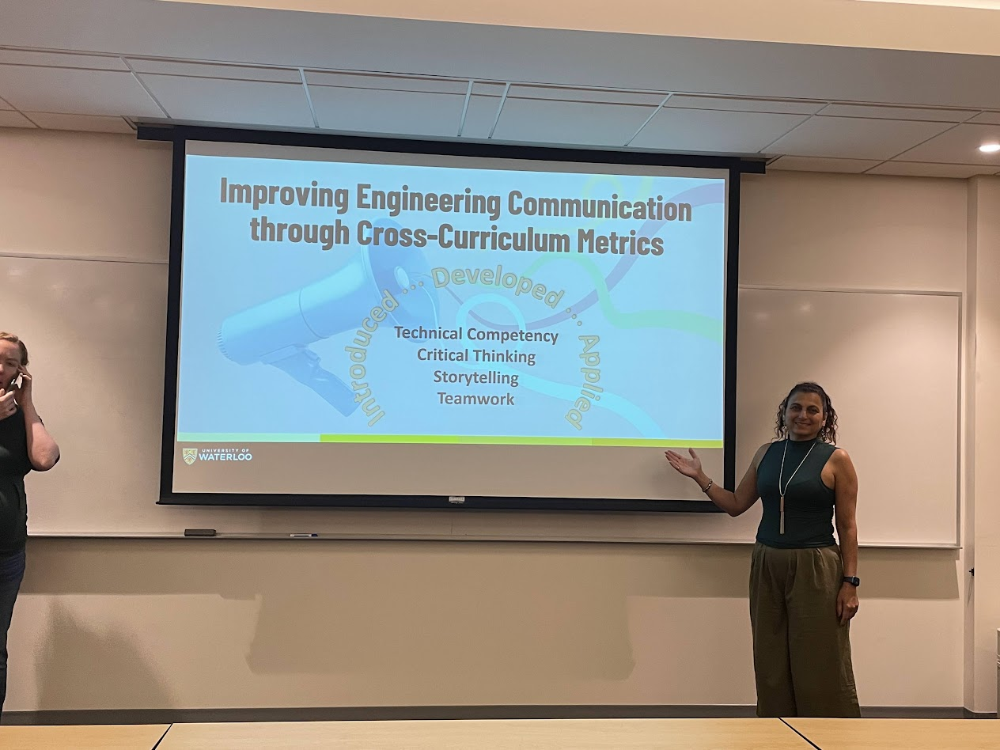

Supporting engineering programs, universities, accreditation agencies, and educational institutions through Washington Accord alignment, CEAB and ABET accreditation support, outcomes assessment, quality assurance, continuous improvement, and capacity building.
Led by Dr. Rania Al-Hammoud, P.Eng., PhD, ZYTRA Engineering & Consulting supports engineering programs, universities, accreditation agencies, ministries of education, and professional organizations seeking sustainable approaches to accreditation, quality assurance, outcomes assessment, and continuous improvement.
With more than 15 years of experience in engineering education, graduate attributes assessment, faculty development, curriculum improvement, and quality assurance, ZYTRA provides practical and evidence-informed consulting services that support institutional excellence and accountability.
CEAB and ABET preparation, self-study development, accreditation readiness reviews, and Washington Accord alignment.
Assessment planning, curriculum mapping, performance indicators, outcomes measurement, and data-informed improvement.
Academic program reviews, institutional quality assurance frameworks, evidence-based decision making, and support for continuous quality improvement processes.
Workshops, leadership development, faculty training, coaching, and organizational change support.
Keynotes, conference presentations, executive briefings, and customized professional development workshops.
.jpg)
The expertise behind ZYTRA Engineering & Consulting is grounded in recognized leadership in engineering education, accreditation, faculty development, quality assurance, and continuous improvement.
ZYTRA Engineering & Consulting combines expertise in accreditation, quality assurance, outcomes assessment, faculty development, professional training, and engineering education leadership.

Facilitating professional development workshops focused on accreditation, assessment, quality assurance, and continuous improvement.

Supporting faculty members and academic leaders through evidence-informed professional development and capacity-building initiatives.

Presenting scholarly and professional work related to graduate attributes, engineering communication, assessment, and continuous improvement.

Active engagement with the international engineering education community through conferences, collaborations, and educational leadership initiatives.
Dr. Rania Al-Hammoud, P.Eng., PhD
Founder & Principal Consultant
Email: rania@zytraengineering.com
Website: zytraengineering.com
Kitchener, Ontario, Canada